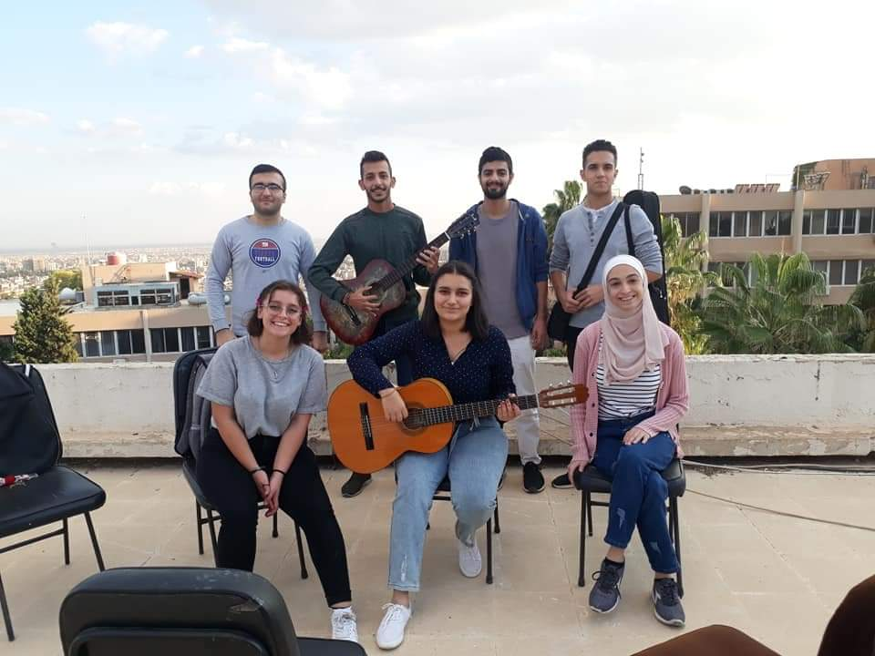

My Background
I completed my Bachelor’s degree at the Higher Institute for Applied Sciences & Technology (HIAST) in October 2024, graduating as the Top Student in my class.
Currently, I am pursuing my MSc in HealthTech at the University of Strasbourg.
My Philosophy: From an early stage, I enjoyed asking "why" and "how". This curiosity led me to the Physics Olympiad and eventually to Engineering. I am fascinated by what happens when mathematical theory meets the imperfections of the real world—dealing with noise, backlash, and uncertainty is where the real engineering happens.
I participated in the HiTech Conference on Intelligent Systems with my fourth-year project: "Theoretical Study and Practical Comparison of 3RRR Planar Parallel Manipulator Control."
My project was awarded 1st Place among university projects across Syria. It was a transformative experience—presenting research to experts and defending my findings on data-driven vs. classical control.
I showcased my graduation project, "Adaptive Neural Control of a Stewart Platform," at the Faculty of Mechanical and Electrical Engineering pavilion. The project tackled control under dynamic uncertainties through:
- Neural-based adaptive controllers replacing inverse kinematics.
- Comparison of Data-driven vs. Classical control.
- Novel algorithms for hysteresis compensation.
Selected for the National Team (Top 10 nationwide). This experience built my foundation in classical mechanics and taught me the discipline required to solve complex physical problems.

I have been playing guitar since 2019. I enjoy playing classical pieces as well as Blues and Metal. I also served as a tutor in the HIAST Guitar Club, helping beginners take their first steps in music.